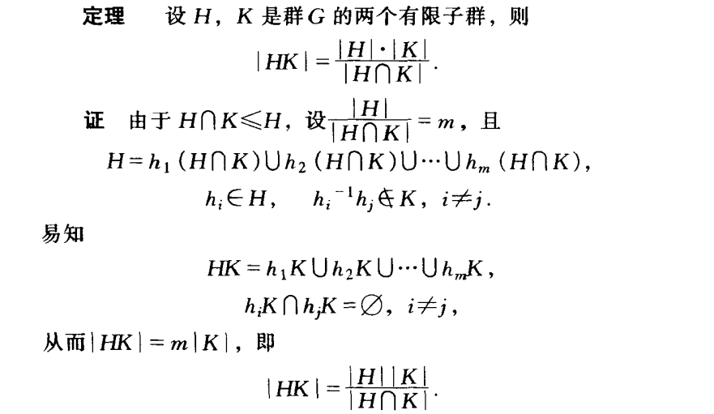

\( G \) is a finite group, \( H \) and \( K \) are subgroups of \( G \). gcd([\( G \):\( H \)], [\( G \):\( K \)]) = 1.
Prove that \( G = HK \).
Given \( H \leq G \) and \( K\leq G \), we have \(\ H\cap K \leq G \).
According to Lagrange's Theorem, \( [G:H\cap K]=[G:H][H:H\cap K]=[G:K][K:H\cap K]. \)
Given that \( [G:H][H:H\cap K]=[G:K][K:H\cap K] \)
and that gcd\(([G:H], \ [G:K])=1 \)
\(\Rightarrow [G:H] \ \Big| \ [K:H \cap K] \)
\( [G:H] \ \Big| \ [K:H \cap K] \)
\( \Rightarrow\frac{|G|}{|H|} \Bigg| \frac{|K|}{|H \cap K|} \)
\( \Rightarrow |G| \Bigg| \frac{|K||H|}{|H\cap K|} = |HK| \)
\( \Rightarrow |G|\leq|HK| \ \ \ \ \ (\because |HK|\ne 0) \)
\( H \) and \( K \) are subgroups of \( G \). Hence, \( HK \subseteq G \Rightarrow G = HK \)
Q.E.D.
Postscript:
